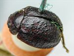
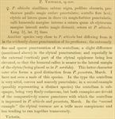

Click on images to enlarge
{kind=link}

Paropsis victoriae, type specimen
{kind=link}

Paropsis victoriae, description
Name
Trachymela victoriae (Blackburn, 1896)
Type specimen
Location: BMNH
Label data: “Type” (red-bordered circle), “1042 T”, “Vict. 281 Fr.”, “Blackburn coll. 1910-236.”, “Paropsis victoriae Blackb.”
Female; Size: 7.8 x 5.7 x 3.5 mm; A-A: 1.2 mm; HCE/BL: 17.5% (estimated from lateral view in photo).
Head brown, puncturation slightly wrinkled; pronotum dark brown, slightly uneven and fairly shallow punctures on disc, much larger laterally, foveal peak with punctures, elytra brown with black verrucae scattered over it, with some of the interstices also black; ventrally, all trochanters with a scatter of setae.
Two other specimens in the same tray (both with a single label: “Baly Coll.”) have their aedeagus dissected out and are clearly Ta25. These specimens are a little smoother in their elytral sculpture.
Original description
[Original description shown in figure, translated from Latin using ChatGPT]
Female. Very similar to P. alticola; underside black, legs dark; prothorax somewhat more densely punctured; scutellum almost smooth; elytra punctured slightly more strongly at the sides than on the disc; inner margin of the humeral callus much farther from the suture than from the lateral margin of the elytra; in other respects as in P. alticola.
Length 3⅘ lines (8.6 mm), width 2⅘ lines (6.3 mm).Notes
By comparison with the type, this is clearly Ta25. The type has the characteristic setose trochanters of Ta25, as well as the characteristic reddish costae on the elytra, interrupted by verrucae.
References
Blackburn, T. 1896, "Revision of the genus Paropsis. Part I", Proceedings of the Linnean Society of New South Wales, vol. 21, no. 4, 637-693 (page 673).
Copyright © 2026. All rights reserved.